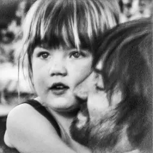

Il significato dietro i suoni
Analisi approfondite dei brani che contano. Non recensioni, non classifiche — il significato nascosto dentro ogni traccia.
Artisti
Analisi
Autore

In evidenzaTame Impala · DeadBeat · 2025
Bassi aggressivi e un synth inquietante: il singolo più ballabile dell'album nasconde la terrificante paura dei propri pensieri.
Un brano downtempo che racconta la resa davanti a qualcosa che fa male. Pop anni 2000 con un cuore spezzato.
Le nuove analisi sull'album Locket sono in arrivo. Torna presto.